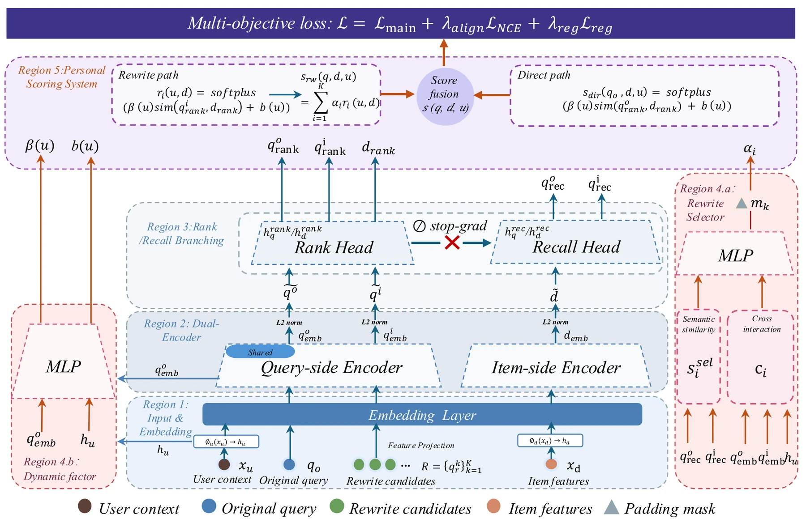
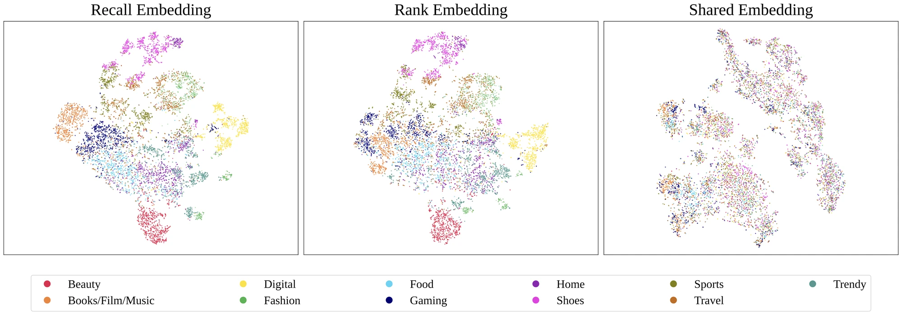
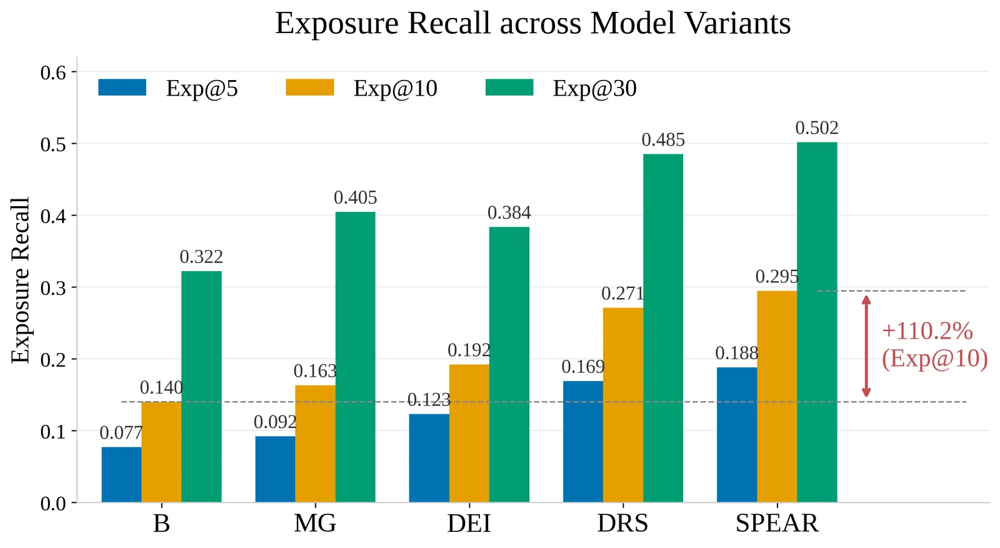
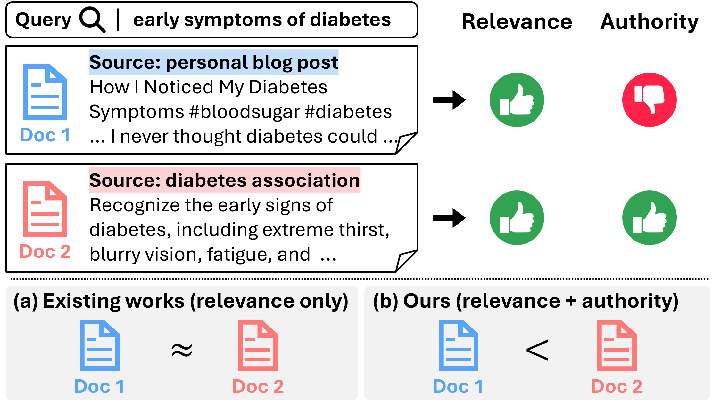
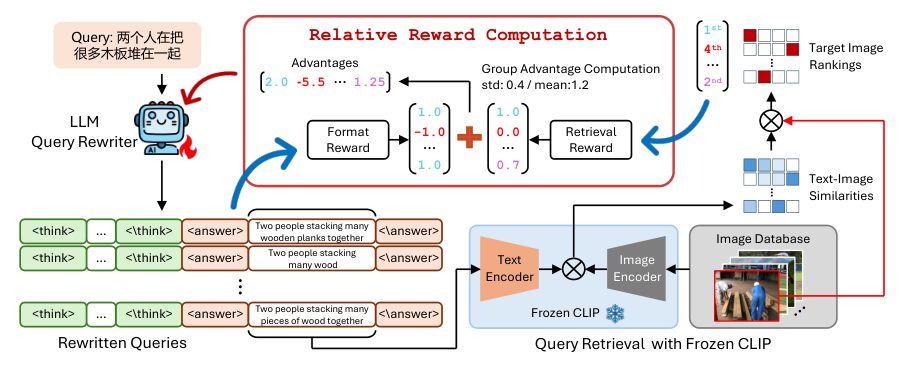
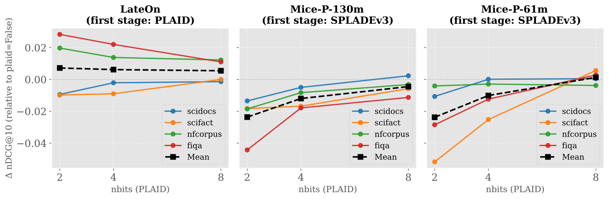
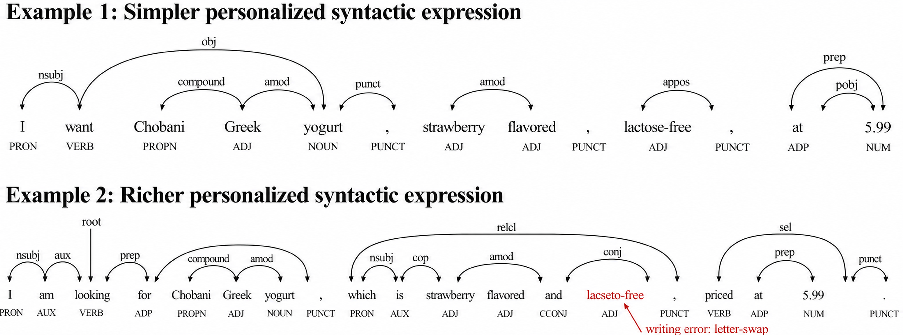
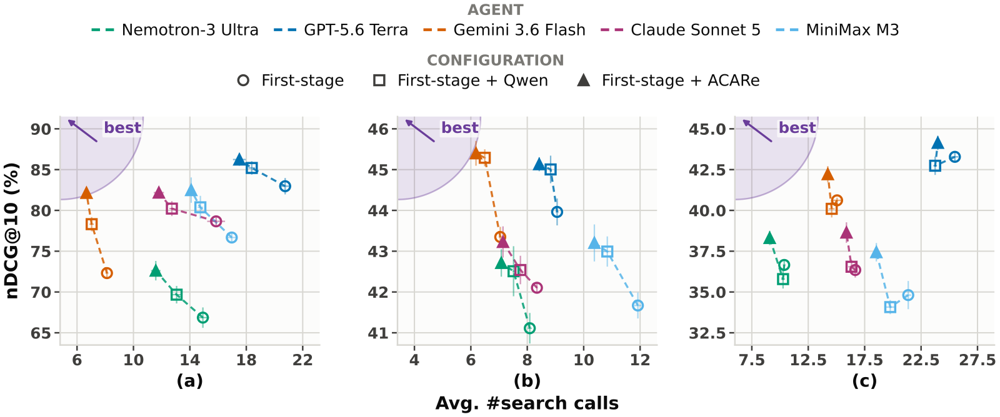
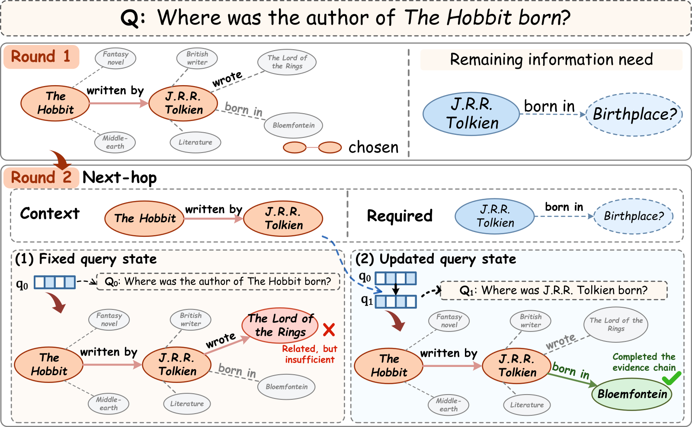

Contents · 9 sections
1Background: what current practice gets wrong2The whole pipeline at a glance3Why the recall and rank embeddings are separated4Why selection weight is multiplied by relevance5How the rewrite selector learns6Experiments: offline, online and human evaluation7Limitations as I see them8How a search team could try it9Overall assessmentSHARE
When PDN (Path-based Deep Network), a path-based model from recommendation, is reused to pick query rewrites in search, it learns a shortcut: broad, high-traffic rewrites such as "phone case" or "women's dress" connect to a lot of content and do earn clicks, so they keep getting selected, while the brand, model and other constraints the user typed are lost. SPEAR (Selection-aware Personalized End-to-end Adaptive Rewriting and Retrieval) trains rewrite selection directly on the final click signal and adds two guards: a rewrite's selection weight is multiplied by its relevance to the item, so both must be high, and the embeddings used for recall are separated from those used for ranking, with click gradients blocked from the recall branch. On 100K held-out production sessions, Click Recall@10 rises from 0.1694 to 0.3380, and the rewrites also become semantically closer to the original query.
Background: what current practice gets wrong
In community search, queries are often short, colloquial and full of brands and model names, such as "361° Feiran running shoes" or "men's winter pajamas for sleeping". The system usually expands a query into several rewrites and retrieves content (user posts and notes) for each. A good rewrite has to widen recall without dropping the brand, model, scenario or attributes the user typed. The paper argues that current practice goes wrong in three places.
The first problem is that rewriting and retrieval are trained separately. In the usual two-stage pipeline, the rewrite module picks rewrites by proxy targets such as semantic similarity to the query or language-model perplexity, while retrieval and ranking are trained on exposures and clicks. A rewrite that looks reasonable is not necessarily one that retrieves what the user wants to see.
The second problem comes with the obvious fix. End-to-end training is the natural remedy, and PDN in recommendation does exactly that: it sums the scores of two-hop paths such as user → trigger (an item the user interacted with) → target item, so the click signal trains both which trigger to pick and how similar trigger and target are. Moved to search, the paths become query → rewrite → item, and click supervision can flow back into rewrite selection. But recommendation optimises for clicks only and never requires results to match an explicitly stated intent. Under additive aggregation, high-frequency generic rewrites such as "phone case" or "women's dress" have high priors and connect to many items, so selection confidence alone can lift a path's score even when the rewrite barely matches the target item. The paper calls this the generic-word dominance effect. It is hard to spot in aggregate CTR, because broad results still get clicks, just not on the most relevant content.
Three queries from the paper's Table 5 show the drift clearly:
- "361° Feiran running shoes": the production PDN baseline's top-10 rewrites include "Li-Ning", "Li-Ning Chitu 9", "badminton shoes" and "cotton shoes", none of which is the 361° Feiran. SPEAR's top 10 all stay on the model line, for example "361 Feiran 4mix" and other Feiran generations.
- "men's winter pajamas for sleeping": the baseline often drops one or two of "men's", "winter" and "pajamas" and leaks into terms like "men's clothing" or "Li-Ning down jacket". SPEAR keeps all three attributes across its top 10 and adds qualifiers such as "thick" or "cotton".
- "handbag": the baseline drifts to "schoolbag", "Hello Kitty" and "sw1480x". SPEAR returns "large-capacity women's bag", "women's crossbody bag" and "handbag as birthday gift", which keep the intent and add one attribute.
The third problem is that recall and ranking share one embedding. Recall needs a stable category and semantic structure to judge whether a rewrite resembles the query, while click ranking favours short-term popular click patterns. When both share one embedding space, ranking gradients pull the recall representation toward popularity and blur the boundaries between brands. The section on separating the recall and rank embeddings gives the numbers.
So what the authors really set out to solve is this: give rewrite selection direct supervision from the final click, without giving up the scalability and serving latency of two-tower retrieval, and use the model's structure to stop semantic drift. The work builds on PDN, MOPPR (a multi-objective personalization extension of PDN), two-tower retrieval and contrastive learning, but the goal shifts: picking a trigger in recommendation only has to earn clicks, while picking a rewrite in search must also stay faithful to what the user wrote.
The whole pipeline at a glance

A training example has five parts: the user , the original query , a set of candidate rewrites mined offline, an item , and whether the impression was clicked, . Missing candidate slots are padded and masked out.
Candidates come from two offline sources. One is behavioural: a query–item bipartite graph over 180 days of click logs, mined with Swing, yields about 960 million query–query pairs per day. The other is semantic: nearest-neighbour search over text embeddings adds about 108 million pairs per day to cover long-tail queries. SPEAR does not generate rewrites; it chooses among these candidates and decides how much weight each one gets.
From bottom to top, the forward pass is:
- The original query and every candidate pass through the same query encoder, the item through the item encoder, and all vectors are L2-normalised.
- Each vector is split into two branches: a recall vector and a rank vector.
- The selector reads the recall vectors and user features and gives each candidate a weight .
- The scorer uses rank vectors to measure how relevant each rewrite is to the item, multiplies by , sums, and adds the score of the original query matched directly to the item.
- The final score is turned into a click probability and trained with cross-entropy against real clicks.
Why the recall and rank embeddings are separated
If recall and ranking share one embedding, click gradients flow all the way into the representation used for recall. Clicks favour popular content, so the recall space gets pulled toward popularity, and semantically close rewrites stop sitting together.
SPEAR puts two lightweight MLP heads on top of the shared encoder. The rank head receives the full click-loss gradient and learns whether an item will be clicked. The recall head receives only the gradient of the alignment loss (the InfoNCE term below); the click loss is cut off by a stop-gradient before it reaches it. Because both heads share the encoder, the lower layers still learn from both semantic and behavioural signals. Hoot says

One shared embedding (contrast, illustrative)
- click loss → recall representation
- changes it: same vector as ranking
- similarity the selector reads
- moved by click gradients too
- shared encoder
- dominated by clicks
Measured in the paper: Purity@10 with a shared embedding is only 0.229.
SPEAR: each loss has its own route
- click loss
- updates Rank Head, selector, and the shared encoder
- click loss → Recall Head
- cut: gradient is zero
- selector reads recall similarity
- read only
- contrastive loss
- updates shared encoder, Recall Head
- contrastive loss → selector
- cut: weights α get no gradient
Illustration: someone searching “361° Feiran running shoes” clicks a popular Li-Ning post. That click moves the Rank Head, the selector and the shared encoder; the Recall Head stays put, so recall space is touched only indirectly through the shared encoder. The recall embedding's Purity@10 of 0.740 comes from the whole design, not this one cut alone.
Left: what happens with a single embedding and no stop-gradient (illustrative); Purity@10 is the paper's measured shared-embedding model. Right: the parameter groups the paper gives. The three cuts are spread over three places in the text: the Recall Head (this section), the recall similarity the selector reads, and the rewrite weights α inside the contrastive loss (both in the selector section). Source: paper §3.1.3 eq. (7), §3.2 eq. (9), §3.4.2 eq. (18), §3.5 eq. (21); Purity@10 from this section's table (the paper's Figure 5 metrics); “361° Feiran running shoes” is a query from the paper's Table 5
The paper checks this with t-SNE plots of 7,997 items with known categories, using the recall space, the rank space, and a model where one shared embedding does both jobs.

Purity@10 is the share of an item's 10 nearest neighbours that belong to the same category:
| Metric | Recall embedding | Rank embedding | Shared embedding |
|---|---|---|---|
| Purity@10 | 0.740 | 0.698 | 0.229 |
| Purity@50 | 0.676 | 0.619 | 0.189 |
| Inter/intra distance ratio | 1.753 | 1.658 | 1.039 |
| Effective rank ratio | 0.288 | 0.442 | 0.428 |
With a shared embedding, Purity@10 is only 0.229 and inter-class distance is barely larger than intra-class distance (ratio 1.039), which means the category structure has been washed out by click signals. After the split, the recall space has the best purity and separation, which suits judging whether a rewrite resembles the query, while the rank space has the highest effective rank ratio (0.442 vs 0.288), spreading information across more dimensions to tell apart fine differences within a category.
Why selection weight is multiplied by relevance
Suppose a rewrite path contributes "selection score + relevance score". Then the selector can make a path score high just by giving a generic rewrite a large selection score, even if the rewrite barely matches the item. Under a click objective such paths often do get clicks, so the selector drifts further toward generic words.
To close that shortcut, SPEAR multiplies instead. For rewrite and item it first computes a non-negative relevance:
Here is cosine similarity between rank vectors. The rewrite score is ; the direct score uses the same formula with the original query; the final score is . This content-dependent score is used in training. For serving, the paper only says rewrite selection takes about 25 ms per request, runs in parallel with other query-understanding modules, and each selected rewrite triggers its own retrieval route whose results are merged into the candidate pool. Whether the final score with the direct path is also computed online, the paper does not say.
For example (illustrative numbers): the generic rewrite "running shoes" has selection weight 0.8 and relevance 0.1 to a "Feiran 4 on-foot review" post. Additively the path gets 0.8+0.1=0.9; multiplicatively it gets 0.8×0.1=0.08. The specific rewrite "361 Feiran 4" has weight 0.2 but relevance 0.9, so it contributes 0.18, more than the generic one. A path with high weight but no match to the item contributes almost nothing, so the selector cannot score by simply picking popular words. Note that "relevance" here is the calibrated : cosine similarity is scaled by , shifted by , then passed through softplus. Softplus only makes it non-negative, and the formulas put no sign or range limit on or , so "low cosine means low " is something training has to learn, not something the formula guarantees.
The direct term works like a residual connection: in this score, even if every candidate rewrite is poor, the original query's match to the item still counts. The paper does not say which serving step the direct path corresponds to, for example whether the original query gets its own retrieval route.
How the rewrite selector learns
The selector scores each candidate and turns the scores into weights with a temperature softmax that ignores padded slots, so the weights sum to 1. It has two inputs. One is semantic similarity: the cosine similarity between the original query and the rewrite in recall space, passed through a stop-gradient so the selector can read it but cannot reshape it for clicks. The other is a cross feature: user features and the original query go through a small network and are multiplied element-wise with the rewrite vector, so the same rewrite can get different weights for different users. This path uses the shared encoder's output before it splits into the recall and rank branches; the paper states a stop-gradient only on the similarity input.
The softmax temperature is learnable, starting at 0.8 with a floor of 0.6. A very low temperature would put all the weight on one rewrite and starve the rest; the floor prevents that early collapse. A separate small network maps the user and query to , which sets how much a small similarity difference matters, and , which sets the baseline score.
The non-negative final score becomes a click probability through
Here gives probability 0 and larger approaches 1. Worked example: gives about 0.632 and about 0.865. This mapping guarantees one thing: a higher final score means a higher click probability. But the rewrite weights go through softmax and sum to 1, so adding a candidate takes weight from the others, and the final score need not go up. The main loss is binary cross-entropy against clicks.
Since the recall head gets no click gradient, it needs its own training signal. SPEAR adds an InfoNCE loss in recall space: the original query's recall vector should be close to the clicked item's recall vector and far from negatives, and the same is required of a "rewrite mixture" vector, the -weighted average of the rewrites' recall vectors (with under stop-gradient, so this loss does not move the selector). The total loss is
with , InfoNCE temperature 0.07 and . The alignment weight is an order of magnitude below the main loss: it keeps related queries and items together in recall space without competing with the click objective.
Experiments: offline, online and human evaluation
All experiments run on Dewu's community content search. Models are trained on one week of logs (8–14 March 2026) and evaluated offline on 100K held-out sessions from 15 March. The control is the production PDN system. To isolate each part, one component at a time is added to the baseline and compared with the full version: MG (multiplicative gating only), DEI (dual-embedding isolation only), DRS (dynamic rewrite selector only), and SPEAR with all three.
Click Recall@K is the share of actually clicked items recovered when the top-K rewrites are used for retrieval:
| Method | Recall@5 | Recall@10 | Recall@30 |
|---|---|---|---|
| Baseline PDN | 0.0958 | 0.1694 | 0.3699 |
| +MG | 0.1132 | 0.1972 | 0.4572 |
| +DEI | 0.1490 | 0.2286 | 0.4371 |
| +DRS | 0.2035 | 0.3167 | 0.5415 |
| SPEAR | 0.2223 | 0.3380 | 0.5519 |
The selector is the largest single contributor (+86.9% Recall@10), then isolation (+34.9%) and gating (+16.4%); together they reach +99.5%. Making selection answer to clicks drives most of the recall gain, and the other two add on top.

Exposure recall shows the same pattern: selector +93.4%, isolation +37.0%, gating +16.5%.
Semantic drift is measured with a production-grade relevance model, trained offline on query–item pairs with human relevance labels, which embeds each query; as the mean cosine similarity between the original query and its top-K rewrites:
| Method | Top 5 | Top 10 | Top 30 |
|---|---|---|---|
| Baseline PDN | 0.7038 | 0.6986 | 0.6975 |
| +MG | 0.7919 | 0.7822 | 0.7607 |
| +DEI | 0.7487 | 0.7518 | 0.7344 |
| +DRS | 0.6899 | 0.6949 | 0.7020 |
| SPEAR | 0.8443 | 0.8258 | 0.7855 |
This table shows the design intent most clearly. The selector alone gives the biggest recall gain but slightly lowers top-10 similarity (−0.5%), which the authors read as a small trade-off between coverage and semantic closeness; the experiment does not measure how often rewrites become generic, so it only shows they drift slightly further from the original query. Gating alone lifts similarity by 11.9% and isolation by 7.6%; all three together give +18.2%. Recall comes from the selector, and the structural guards act as the brake on drift.
Online A/B results, tested two-sided on per-user daily metrics:
| Metric | Meaning | Relative lift | Significant |
|---|---|---|---|
| QVCTR | query-view CTR in content search | +0.259% | yes |
| UVCTR | user-level CTR on the two-column feed | +0.337% | yes |
| ReadVV | average reading depth of search users | +0.733% | yes |
| TabDur | average content-tab duration | +0.467% | yes |
| D1 retention | next-day return | +0.328% | no |
| D7 retention | 7-day return | +0.216% | no |
Reading depth and dwell time rise more than CTR, which suggests the extra clicks land on content people keep reading. Retention is positive but not significant. A GSB human evaluation used 150 queries whose top-6 results differed. Annotators scored each result for satisfaction and relevance and position-weighted the scores into a DCG per list; SPEAR's satisfaction and relevance DCG were both higher, the relevance bad-case rate fell 0.46 pp, and the net share of queries where annotators preferred SPEAR over the baseline was 4.6%, which is significant. Rewrite selection costs 25 ms per request and runs in parallel with other query-understanding modules inside an existing 30 ms stage, so end-to-end latency does not change. SPEAR has been fully deployed since 2025.
Limitations as I see them
- The only comparison is the production PDN baseline. The paper argues other methods cover only parts of this end-to-end problem, but readers cannot tell how SPEAR compares with LLM-based rewriting.
- The selector only chooses among offline candidates from Swing and embedding search; if a long-tail query has no good candidate, SPEAR cannot invent one.
- The selector alone lowers top-10 similarity slightly, by 0.5%. The authors explain that it is trained on clicks only and sometimes picks rewrites with broader coverage that sit a little further from the original query; in the full model, gating and isolation pull that drift back. Teams that adopt only the selector to boost recall may see drift return.
- Retention is not significant and the human evaluation covers 150 queries, so long-term value needs more evidence.
How a search team could try it
- Diagnose first: plot production rewrites by selection weight and by similarity to the original query. Many high-weight, low-similarity generic rewrites are the signature of the generic-word dominance effect.
- The cheapest step is replacing "weight + relevance" with "weight × relevance" in path scoring. In the paper this alone gives +16.4% Recall@10 and +11.9% similarity, and only touches the scoring layer.
- If recall and ranking share query embeddings, split them into two heads on a shared encoder and stop click gradients at the recall head. Category purity among nearest neighbours is a quick check that recall vectors have not been washed out.
- Finally add the end-to-end selector and the InfoNCE term, starting from the paper's settings: alignment weight 0.1, InfoNCE temperature 0.07, selector temperature 0.8 with a 0.6 floor.
Overall assessment
| Dimension | Assessment |
|---|---|
| Problem importance | High. Split objectives between rewriting and retrieval, and generic rewrites taking traffic, are common in community and e-commerce search |
| Novelty | Medium-high. Each piece is simple; the value is pairing click supervision with anti-drift structure and showing each part's role through ablations |
| Evidence | Fairly strong: offline click and exposure recall, semantic similarity, online A/B, human evaluation and embedding analysis, though only one baseline |
| Engineering cost | Medium: offline candidate mining plus extra selector inference, with latency hidden by parallelism |
| Worth trying | Yes. Gating and isolation can ship step by step, with small changes that can be validated separately |
Overall, this paper is worth a careful read for search teams. It takes apart a common failure, split objectives between rewriting and retrieval plus generic words capturing traffic, and its three changes (multiplicative scoring, separate embeddings with stop-gradient, and an end-to-end trained selector) can be adopted one at a time. The evidence is fairly complete: offline Recall@10 nearly doubles while rewrites become more, not less, similar to the original query, and the online A/B test shows significant gains in query-level CTR and reading depth. The paper was accepted to the RecSys 2026 main track.
How did this read for you?
Hoot made a note. Thanks for the feedback.
One tap, no sign-in; tap again to undo. Only anonymous counts are kept, never who you are.
Related papersMore from Paper Daily

Retrieval · 2026-08-05From Relevance to Authority: Authority-aware Generative Retrieval in Web Search EnginesDeep dive: From Relevance to Authority: Authority-aware Generative Retrieval in Web Search Engines.
Retrieval · 2026-10-29GRAPE: Let GRPO Supervise Query Rewriting by Ranking for RetrievalRetrievers like CLIP degrade noticeably on Chinese queries, long-form queries, or combined image-and-text queries, yet retraining the retriever and re-embedding the whole corpus is too expensive. This paper leaves the retriever untouched and trains only an LLM that rewrites the query, using GRPO with retrieval rank as the reward for each rewrite. The authors find that if the reward only looks at…
Retrieval · 2026-10-26MICE to Meet You: From Re-ranking Only to End-to-End RetrievalCross-encoders rerank candidate documents most accurately, but every candidate must be fully processed for every query. This paper gives the faster MICE architecture a document storage scheme, MICE-P, which comes close to cross-encoder ranking quality at about a quarter of the per-query time. In MICE, the first layers encode the query and the document separately, so the document part can be preco…
Retrieval · 2026-10-26PersonalQuery-Benchmark:Evaluating Retrieval Robustness to Personalized User Expression DifferencesTwo shoppers want the same product. One asks for strawberry, lactose-free Greek yogurt in a short phrase; the other writes a longer sentence and misspells a word along the way. Will search return the same results? This paper builds a benchmark, PQB, from real user reviews in three Amazon categories to test whether results hold up when the same need is worded differently. They often do not. With t…
Retrieval · 2026-10-28ACARE: Agent-Context-Aware Reranker for Iterative SearchSearch agents often send sub-queries of just a few keywords, so a sub-query-only reranker promotes documents that match the words but do not help the real question. ACARe gives the reranker the original question and the agent's reasoning too. The key control: without changing Qwen3-Reranker-4B's weights, adding the question alone lifts a small agent's accuracy from 48.2% to 54.8%, and fine-tuning… Retrieval · 2026-08-03SaFRO: Satisfaction-Aware Fusion via Dual-Relative Policy Optimization for Short-Video SearchDeep dive: SaFRO: Satisfaction-Aware Fusion via Dual-Relative Policy Optimization for Short-Video Search.
Retrieval · 2026-08-03SaFRO: Satisfaction-Aware Fusion via Dual-Relative Policy Optimization for Short-Video SearchDeep dive: SaFRO: Satisfaction-Aware Fusion via Dual-Relative Policy Optimization for Short-Video Search.
Retrieval · 2026-11-05QueryFlow: Multi-Hop Graph Retrieval with Adaptive Query EvolutionThe paper builds a multi-hop graph retriever, QueryFlow, that revises the question as it searches. After each propagation layer, it condenses the context found so far into a summary vector, merges it into the question state, and uses the new state to steer how the next layer searches. Earlier graph retrievers such as GFM-RAG keep the original question as the condition throughout propagation. Yet…
Discussion
Add experiment details, reproduction notes or a different take. Requires a GitHub sign-in.
Loading the discussion…